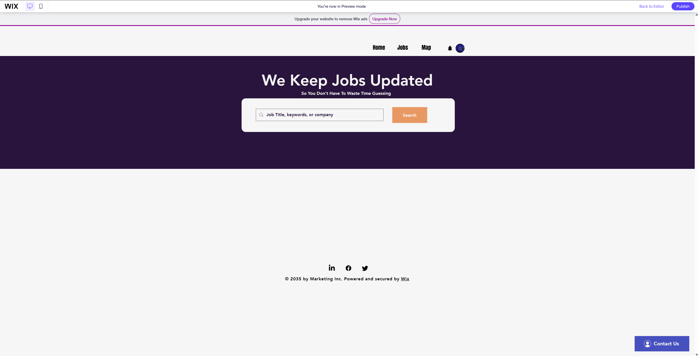

Project Overview
Careers Connect was a group project created with Wix to simulate a job-search platform similar to LinkedIn. Our goal was to design a site that simplified job searching, emphasized clarity in the user interface, and rotated jobs older than 90 days for relevancy.
View Careers Connect (Wix Link)
- Designed a website similar to LinkedIn's format, optimized for easy job searching.
- Led a team of 5 students to develop the project by coordinating tasks and deadlines.
- Learned HTML for structuring digestible layouts and improving UI visibility.
- Implemented logic to rotate jobs posted more than 3 months prior.
- Practiced collaborative development using Wix with clear deliverables.
Skills Gained
Team Leadership
HTML & Web Layout
UI/UX Design
Wix Platform
Project Coordination
Job Data Management